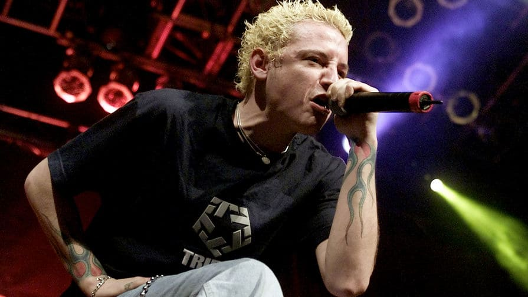

КТО ТАКИЕ LINKIN PARK
Linkin Park — революционная группа, изменившая лицо современного рока.
Основанная в 1996 году в Калифорнии, группа взорвала музыкальную индустрию своим дебютным альбомом "Hybrid Theory" в 2000 году, который стал бриллиантовым (продано более 30 млн копий).
Их уникальный стиль — смесь альтернативного рока, ню-метала, рэпа и электроники — создал абсолютно новое звучание, которое покорило миллионы.
30+ млн альбомов
2 Грэмми
100+ стран

ПОЧЕМУ ОНИ ЛЕГЕНДАРНЫЕ
- Создали новый музыкальный жанр, вдохновив тысячи групп
- Каждый альбом — эксперимент и эволюция звучания
- Легендарные живые выступления с бешеной энергетикой
- Честер Беннингтон — один из величайших вокалистов поколения
- Музыка, которая объединяет людей по всему миру